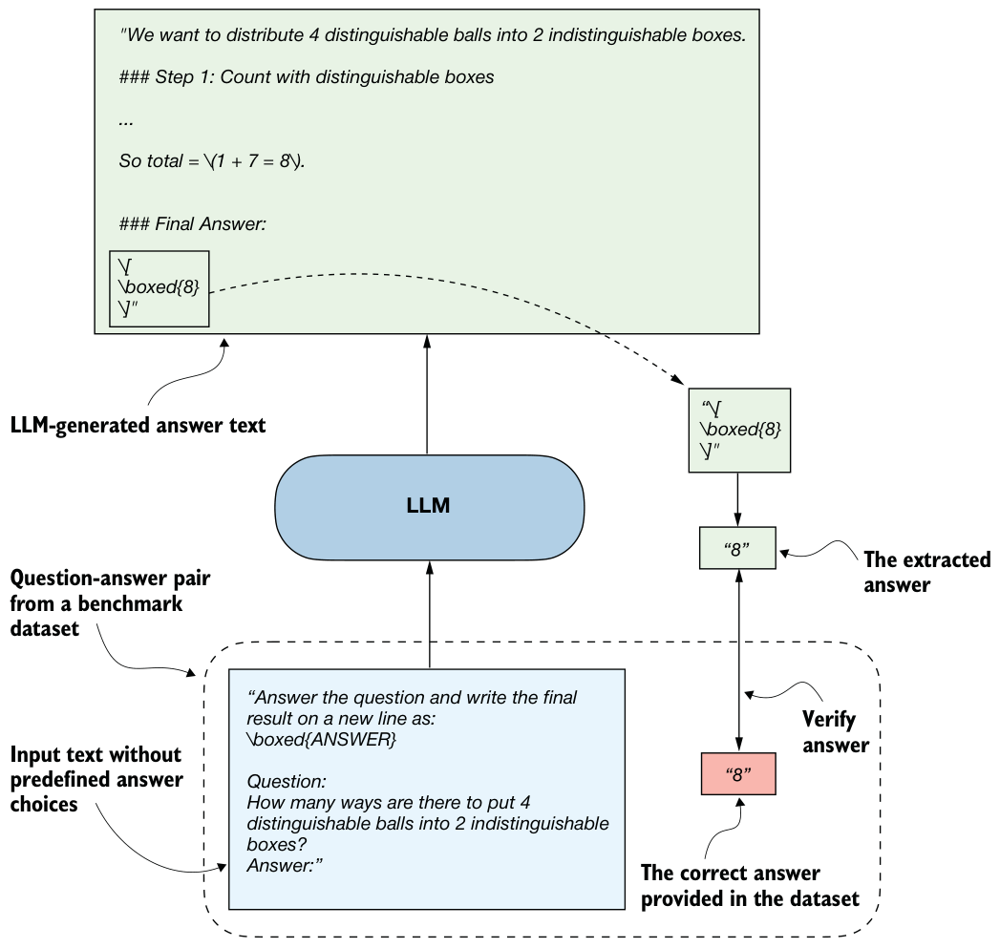

Multiple-choice answer formats
A limitation of multiple-choice benchmarks like MMLU is that they only measure an LLM’s ability to select from predefined options and thus are not very useful for evaluating reasoning capabilities beyond checking whether, and how much, knowledge the model has forgotten compared to the base model. They do not capture free-form writing ability or real-world utility. Still, they remain a simple and useful diagnostic: a high MMLU score doesn’t necessarily mean the model is strong in practical use, but a low score can highlight potential knowledge gaps.
F.3Using verifiers to check answers
Related to the multiple-choice question answering that was discussed in the previous section, verification-based approaches quantify LLM capabilities with an accuracy metric. But unlike multiple-choice benchmarks, verification methods allow LLMs to provide a free-form answer. We then extract the relevant portion of the answer and use a verifier to compare it with the correct answer provided in the dataset, as illustrated in figure F.3.

When we compare the extracted answer with the provided answer, as shown in figure F.3, we can use external tools such as code interpreters or calculator software.
The downside is that this method can only be applied to domains that can be easily (and, ideally, deterministically) verified, such as math and code. Also, this approach can introduce additional complexity and dependencies, and it may shift part of the evaluation burden from the model itself to the external tool.
Because this method allows us to generate an unlimited number of math problem variations programmatically and it benefits from step-by-step reasoning, it has become a cornerstone of reasoning model evaluation and development. An extensive example of this method is provided in chapter 3, so we’ll skip a code demonstration here.